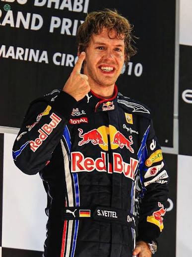

Története
Bevezető
A Red Bull Racing a Forma-1 történetének egyik legsikeresebb és legmeghatározóbb csapata, amely a kezdeti bulizós, laza imázsából kinőve a sportág egyik domináns nagyhatalmává vált.
2005 - A csapat megalakulása
A Red Bull felvásárolta a Jaguar Racing istállót. Létrejött a Red Bull Racing, központja az angliai Milton Keynes-ben. Csapatfőnöknek Christian Hornert nevezték ki.
2006-2008 - Az alapok lerakása
A csapat folyamatos fejlődésen ment keresztül. Érkezett Adrian Newey, a Forma-1 egyik legismertebb tervezőmérnöke. Megjelentek az első dobogós helyezések és futamgyőzelmek.
2009 - Az első nagy áttörés
A Red Bull az élmezőny állandó szereplőjévé vált. Több futamot nyertek, és harcba szálltak a világbajnoki címekért. Egyértelművé vált, hogy a csapat a sport egyik új meghatározó ereje lesz. 2014-2015 - Új kihívások Bevezették a hibrid motorokat a Forma-1-ben. A Mercedes átvette a vezető szerepet, a Red Bull eredményessége visszaesett. A csapat megkezdte az újjáépítést és a technikai fejlesztéseket.
2016-2020 - Fejlődés és tehetséggondozás
A csapat továbbra is rendszeres futamgyőzelmeket szerzett. Egyre
nagyobb szerepet kapott a Red Bull Junior Team
utánpótlás-program. Helmut Marko, a csapat tanácsadója
kulcsszerepet játszott a fiatal versenyzők kiválasztásában és
támogatásában.
A Red Bull fokozatosan visszatért a bajnokesélyes
csapatok közé.
2021-napjainkig - A csapat a sport élvonalában
A Red Bull ismét a Forma-1 egyik legsikeresebb istállója lett. Fontos szereplők maradtak: Christian Horner (csapatfőnök) Helmut Marko (motorsport-tanácsadó) Adrian Newey (tervezőmérnök, 2024-ig) A csapat folyamatosan a világbajnoki címekért és futamgyőzelmekért küzd.
Dr. Helmut Marko szerepe a sikerek mögött
Helmut Marko (jogász és korábbi autóversenyző, aki az 1971-es Le Mans-i 24 órás futamot is megnyerte, ám egy súlyos 1972-es F1-es baleset miatt fel kellett adnia aktív karrierjét) a Red Bull motorsport-birodalmának egyik legfontosabb oszlopa volt.
A Vettel-korszak
A Red Bull Racing és Sebastian Vettel 2010 és 2013 közötti aranykorszaka a Formula-1 történetének egyik legdominánsabb és legsikeresebb fejezete volt, amely a tökéletesre csiszolt technikai fölény, a zseniális csapatirányítás és a fiatal német pilóta hibátlan teljesítményének tökéletes ötvözeteként zsinórban négy egyéni és konstruktőri világbajnoki címet hozott a Milton Keynes-i istállónak.
Ez a dominancia 2010-ben kezdődött, amikor egy rendkívül szoros szezon végén az Abu-dzabi Nagydíjon Vettel a sportág legfiatalabb világbajnoka lett, miután a csapat taktikai zsenialitásának köszönhetően fordítani tudott a riválisokkal szemben.
Az igazi áttörést és fölényt a 2011-es év hozta el, amikor az Adrian Newey által tervezett RB7-es kódjelű autó technikai fölényével Vettel 19 futamból 11-et megnyert, és már a szezon derekán bebiztosította a címet. Bár a 2012-es szezon volt a legnehezebb harc a Fernando Alonsóval és a Ferrarival vívott csatában – ahol egy kaotikus interlagosi esőfutamon bemutatott hősies felzárkózás kellett a végső sikerhez –, a korszak a 2013-as évben ért fel a csúcsra, amikor Vettel zsinórban kilenc futamgyőzelmet aratott a szezon végén, beállítva Alberto Ascari rekordját, és összesen tizenhárom győzelmet gyűjtve egyetlen év alatt.
A történelmi sikerek mögött ott állt Adrian Newey aerodinamikai zsenialitása, amelynek köszönhetően az autók a kanyarokban földöntúli tapadással rendelkeztek, valamint a korszak innovatív kipufogógáz-diffúzor rendszerei, amelyek tökéletesen illeszkedtek Vettel precíz vezetési stílusához, aki a stabil hátuljú autóval képes volt utolérhetetlen tempót diktálni a rajt-cél győzelmekhez. Christian Horner és Helmut Marko vezetése alatt egy olyan fiatal, dinamikus csapat épült ki, amely végleg beírta a Red Bullt és Sebastian Vettelt a Formula-1 örök nagyságai közé.

A Verstappen-korszak

A Red Bull Racing és Max Verstappen együttműködése a Formula–1 újkori történetének egyik legmeghatározóbb, dominanciájában csak a legstílusosabb korszakokhoz mérhető aranykorát hozta el. Bár a sikersorozat magva már a holland pilóta 2016-os, első csapatos bemutatkozásakor elültetődött, az igazi fordulatot a 2021-es szezon hozta meg, amely nemcsak a sportág történetének egyik legintenzívebb, drámai végjátékot hozó bajnoki csatáját nyújtotta Lewis Hamilton és a Mercedes ellen, hanem egyben egy új éra kezdetét is jelezte.
A sikerek megalapozásában kulcsszerepet játszott a Honda-motorok megbízhatósága és ereje, Adrian Newey zseniális aerodinamikai tervezése, valamint Christian Horner és Hannah Schmitz stratégiai precizitása, amely szinte hibátlan működési gépezetet formált a Milton Keynes-i istállóból.
Amikor 2022-ben életbe léptek az új technikai szabályok és a szívóhatású autó-generáció, a Red Bull értette meg leggyorsabban a koncepció lényegét, ami lehengerlő fölényt eredményezett: az RB18, majd az ikonikus RB19 szinte verhetetlen szörnyeteggé vált a versenypályákon, a 2023-as szezonban pedig a csapat 22 futamból 21-et megnyerve történelmi magasságokba emelkedett.
Verstappen ebben a közegben egy korábban ritkán látott szintű gépies pontosságot ötvözött a benne rejlő nyers tehetséggel, és egymás után döntötte meg a legtöbb egymást követő győzelem, a legtöbb egy szezonban szerzett pont, valamint a legmagasabb győzelmi százalék rekordjait. Ez az aranykor nem csupán a trófeák számában mérhető, hanem abban a tökéletességre törekvő harmóniában is, amely a pilóta kompromisszummentes vezetési stílusa és a csapat mérnöki elfeledhetetlensége között jött létre, örökre beírva ezt a szövetséget az autóversenyzés legfényesebb lapjaira.
Összehasonlítás
| - | Világbajnoki címek száma: | Konstruktőri címek száma: | Futamgyőzelmek száma: | Pole-pozíciók száma: | Dobogós helyezések száma: | Leggysorsabb körök száma: |
|---|---|---|---|---|---|---|
| Vettel: | 4 | 4 | 38 | 44 | 65 | 24 |
| Verstappen: | 4 | 2 | 71 | 48 | 127 | 35 |
A jelene
A Red Bull Racing Formula–1-es csapata jelenleg az egyik legjelentősebb átmeneti és építkező korszakát éli, ahol az alakulat teljes belső struktúrája átalakulás alatt áll. A versenyzőpárost a négyszeres világbajnok Max Verstappen vezeti, aki mellé a fiatal Isack Hadjar lépett elő, miután Yuki Tsunoda teszt- és tartalékpilótai szerepkörbe került. A csapat élén is komoly változás történt, hiszen a korábbi hosszú éra után tavaly Laurent Mekies vette át a csapatfőnöki és vezérigazgatói pozíciót.
Ezt a belső átrendeződést több kulcsfontosságú szakember és mérnök távozása is kísérte, köztük Adrian Newey-é, ami szakmailag és szerkezetileg is új kihívások elé állította a gárdát. Mindeközben a csapat legnagyobb technológiai projektje a háttérben már élesedett: a Hondával való együttműködést felváltva a Ford szakmai és technológiai partnerségével létrejött a Red Bull Ford Powertrains, amellyel a Red Bull most először saját fejlesztésű erőforrással áll rajthoz. A csapat jelenlegi helyzetét így a gyári függetlenségre való átállás, a megfiatalított pilótafelállás és az új vezetőség alatti stabilitás megteremtése határozza meg.